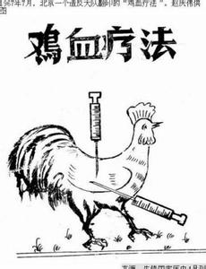
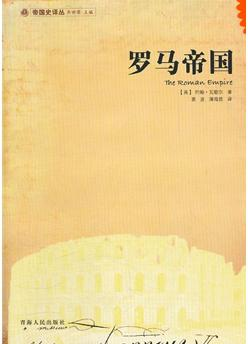

前几天，在一家人愉快的一起吃晚饭时，6岁的女儿突然问了一个很“简单”的问题：什么叫做浪漫？
其实最早我们听到的类似问题是：什么是幸福？网络上已经有各种各样的神回答了，说到底“幸福“就是一种“对比造成的心理或生理落差”，落差越大，幸福或者不幸福的程度就越强。
那么今天我们再来思考另外一个话题：什么叫做浪漫？
当女儿率先问起这个问题时，着实作为女儿爸爸的我僵持了很久，遍历了整个大脑也没想出来怎么解释比较合理。
这时，女儿妈妈想了想给出了标准答案，她说：譬如爸爸送一朵花给妈妈，然后妈妈会感到很浪漫。
女儿终于似懂非懂的点了点头。
（二）
晚饭后，我又思考了一下“浪漫”，猛然发现这个问题有很多值得思考的要素，我来列举一下：
首先是关于“浪漫”的受众对象：
1、上面的浪漫把对象人数圈定了至少两个人，也就是说单独一个人很难营造浪漫的氛围
2、如果是妈妈送一朵花给爸爸，那爸爸会感到浪漫吗？一般不会。
这说明，我们通常认为的浪漫是以“女性”为主要承载体。
其次是我们看下面两种很现实又很残酷的现实：
1、也许（这里是也许）：送花给妈妈的如果不是爸爸（其他男子?) 或者 爸爸送花的对象如果不是妈妈(其他女子？），那么可能会更“浪漫”
2、实际上，现实生活中很多爸爸不会送花给妈妈。（这里注意哦，是爸爸和妈妈，不是老公和老婆）
（三）
于是，我们真的有必要来解读一下什么是”浪漫“了
浪漫这个词是纯国外进口的原生词(Romantic)，中国人最早是在国外各种典籍上看到这个词，于是进行音译，并赋予这个词以生命，譬如它代表着一场轰轰烈烈的爱情、厮守到老的亲情、青春校园中的青涩恋爱等等。尤其是我们这一代人，听到浪漫几乎就想到了“送花、在宿舍楼下摆上99根蜡烛”等。
那么到底人家鼻祖是怎么创造“浪漫”这个词的呢？我们来看以下分解，也许看完会重构你对”浪漫“的理解：
浪漫的词根是roman，也就是罗马。经过我翻查资料，大概那个时候是东罗马帝国统治时代。其实关于罗马，我们可以大概了解到如下概念：
关于罗马
现在的罗马是意大利首都。也是天主教的中心之城。
天主教是什么？其实就是基督教下面的支派，也是最大、人数最多的分派，它的正式名还叫做“罗马公会”。
据说耶稣最早创立基督教时的地点就在现今的巴勒斯坦，属于罗马帝国的统治地盘。当时的基督教徒众多、组织严密、甚至是一呼百应，于是罗马帝国皇帝急了，因为当时罗马帝国存在着数个异教宗派，但是每一支都相对比较分散，不像基督教能够有如此强的组织能力。
时间长了，罗马皇帝认为基督教必须打压，否则必然会成为威胁帝国统治的最大民间力量。
于是，基督教从此承受着罗马皇帝几百年的打压。
不过打压的结果正好和罗马皇帝的目的相反，基督教越打压越强，打了几年下来发现人数不光没有减少，反而大家都像打着鸡血一样斗志昂扬。

最后，罗马帝国的皇帝终于醒悟，原来要想有效控制帝国，最有效的办法的是利用基督教，而不是打压基督教。
于是，罗马统治者一改往常嘴里，先是承认基督教合法地位，看了看效果还行，就是还不够给力。于是，开始逐步打压其他教派，默默无闻的开始扶持基督教，效果果然很明显，有时候国王的命令发出去没人执行，直接养一个什么“大主教”即可，啥事都借“大主教”的嘴发出，执行力极其高效。
大约是在公元392年，罗马皇帝索性宣布基督教是唯一合法的教派，其中著名的君士坦丁大帝就是一个基督教徒国王。
其实到这里我们可以把“罗马”一词打上宗教、战争、冒险等几个标签。
关于浪漫
上面讲到392年基督教一统了天下。大约又过了三年也就是395年，罗马分裂成了西罗马帝国和东罗马帝国。其中有较大影响力的是东罗马帝国也称拜占庭帝国。至于它们为什么会分裂，有兴趣的大家可以去看一本《罗马帝国》的书。

个人认为，要了解欧洲文化首当其冲的是要了解罗马帝国的兴衰历史。
东罗马帝国的文化是一个极其鼎盛时期，与中国也有着些许通商（中国那时应该是三国两晋时期）,其中由于东罗马帝国的宗教性质，还传入了一些民间幻术到中国，我们现在看到的杂技就是从它逐步演化出来的产品。
东罗马帝国民族构成极为复杂，除了本土还有希腊人、叙利亚人、科普特人、亚美尼亚人、格鲁吉亚人。这也造就了东罗马帝国时期的文化构成也极其复杂，那时的艺术作品充满了传奇、激情、夸张和虚幻等色彩，而此时roman本身的名词被形容词演化出现了：romanesque、romantic。
其中romantic 换成中文我们就懂了：罗曼蒂克。
Romanesque在艺术作品中奠定了早期罗马的独特风格。大多数那时的文学作品出现romanesque这个词技术都是描写一些传奇冒险、人为虚构的一些场景。甚至到了后期它还被解释为“幼稚的、不切实际的、荒唐的”。
如果在这个阶段我们硬套一个爸爸送花给妈妈的场景，那就变成：
那是一个战乱的年代，爸爸冒着生命危险躲过枪林弹雨，最后在腿部和腹部同时中弹的情况下终于在路边夜店里买了一朵玫瑰花，送给了妈妈。
妈妈接过花，反手给了爸爸一耳光。“你蛇精病啊”。
这是就是当时的一种荒唐的”浪漫”。
也许大家看到这要问，那“浪漫”到底是怎么演变到今天的词意的呢？
其实这是在18世纪末出现的一个新文化主义思潮：浪漫主义文化思潮。据说这是为了反驳僵化的法国古典主义而产生的一次重要思潮之一。
我们可以看到西方文学艺术的兴盛确实是有原因的，譬如古典主义、文艺复兴时代、启蒙时代（理性主义，著名的有伏尔泰）、浪漫主义（时代），当然后面还有保守主义、自由主义、名族主义，甚至到了近代还有现代主义（海明威）和后现代主义各个时代（《百年孤独》）等等。
但今天在本文我特别要讲的就是这个“浪漫主义”时代，也唯有浪漫主义时代的思潮把西方文学艺术推向了高峰，当然“罗曼蒂克”也就随之而生了。
浪漫主义讲究的是：
1、基于现实、高于现实，又不脱离现实
2、在此情况下，热情奔放的语言、绚丽多彩的想象和直白夸张的表现手法，抒发对理想世界的追求
当然，这里面也体现了西方人的浪漫观:
1、宣扬个性自由和解放，挣脱制约实现自我
2、礼赞充满感情的生活，放任感情的宣泄
3、追求理想，创造一个充满传奇、冒险的人生，拒绝平庸（大家注意哟，这里面呼应”roman”最早的产生意）
4、推崇人和自然之间的和谐融合。
在我看来，我觉得“浪漫”这个词已经很好的被诠释了。不需要再多加料来画蛇添足。
如果我们再套一下爸爸给妈妈送花的场景应该是这样的：
这是一个封闭的时代，爸爸和妈妈出身贫寒却从不向生活低头。爸爸和妈妈一起在路边摆豆腐摊谋生，尽管天天被城管追着打，但是两人依旧不放弃，互相扶持、共同努力、卧薪尝胆，多年后他们终于有了一家规模不小的豆制品生产厂。那天晚上，爸爸用豆腐雕了一朵花送给妈妈。妈妈一砸大腿，想到了一个新产品：豆腐脑。从此，又一个新的传奇故事产生了。
（四）
这时我们也许光看西方的浪漫主义是不够的，因为我们是中国人。
中国两千多年的封建专制是绝对前无古人后无来者的，当浪漫主义传到中国后，中国人也努力实现了一把“浪漫”。
如果大家读过陶渊明的《桃花源记》就知道那时的中国已经开始私下偷偷的实现“浪漫”。无奈，当时的中国礼教、儒家思想或者我们统一用传统思想来概括吧，压迫着当时的中国人必须按照传统思维老老实实、规规矩矩的过完一生。于是，出现了三种中国人：
1、融入，不想浪漫。规规矩矩的以体制的思想为行为准则
2、只在精神上追求浪漫，现实生活中却跟不敢或者懒得去突破现实，于是成为了双面人。
3、完全的浪漫主义者。疯狂追求个性，完全的实现自我。
以上从调侃的角度似乎还能解释为：70后、80后、90后。
其实，中国人不管是古人还是上面三种人，内心深处都藏有一种追求浪漫的因素。只不过有的敢在现实生活中付诸于行动，有的只敢空想，有的却过于付诸于现实。
也许，确实只有在这种情形下，在中国的浪漫才会被解释成：
被生活压力压得喘不过气的爸爸送了一朵花给妈妈。妈妈很机械的觉得很浪漫。因为他们觉得这件事必须要“觉得浪漫”，然而送花这件事其实一种想象型的浪漫，有可能这件事并不会发生（爸爸没空买，妈妈也没空体会浪漫），这仅仅是解释给小孩听得一个段子。
前阶段，有个和我一样到了当爹岁数的网友和我聊天，问到了关于我们80后该怎么去实现自我价值、突破自我或者完成理想的实现。这位网友自从有了孩子生活、工作变的机械化，每天上班、下班、带孩子、晚上打一小时游戏，几乎天天如此，甚至在我看来成了“古典主义”的代表者。
他说他很羡慕我们几个80后早期的人，依然还能坚持创业的思想，这叫左手娃右手键盘。
我告诉他，其实坚持根本不难，只要你当个浪漫主义者即可。
其实啊，写到这我可以说，80后是基于精神浪漫和现实浪漫主义者中间的一层，除了是最纠结的一层，同时还是最有可能实现西方浪漫主的一层，因为也只有我们这一代能在：宣扬自由、发泄情感、追求冒险人生的同时还能兼顾人与自然的和谐融合。
我相信我们这一代能做到，未来属于80后。
--------------------------------------------------
【你如果不爱读书、不爱看新闻、不爱学习，没关系。我来做你的"陪读君"】
奴隶我的方式：请关注微信订阅号：程序员在囧途。
每天讲故事、讲商业模式、讲技术给你听。